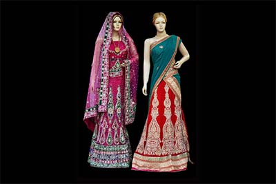
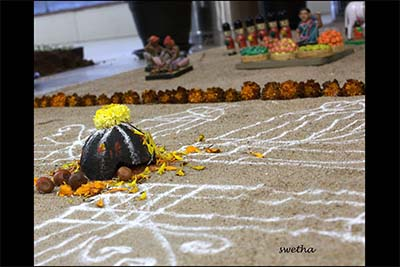

Telengana
Picture and Discription
Language
Telgue is the language of telengana
Clothing
The most famous saris of Telangana culture and tradition include Gadwal Sari, Pochampally Silk Sari, and Ikat Sari
Festival
Sankrathi is a festival celebrated in telengana